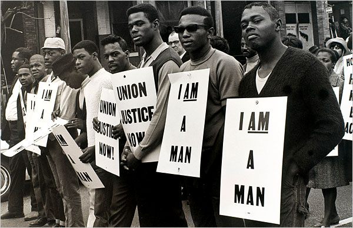
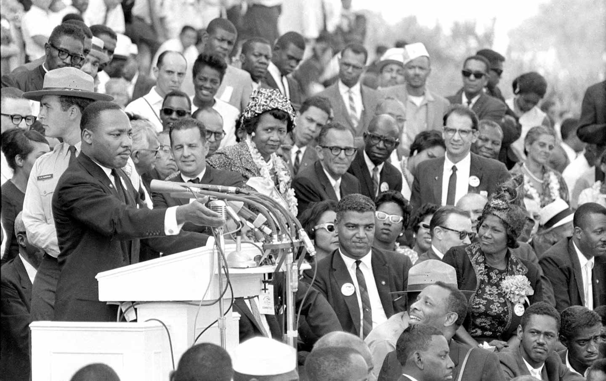

CIVIL RIGHTS MOVEMENT: RHETORHICAL ANALYSIS
PROJECT OBJECTIVE
This project aims to evaluate the rhetoric employed in civil rights speeches delivered during the 1960s. The speeches of prominent leaders such as Martin Luther King Jr., Malcolm X, Muhammad Ali, etc., will be analyzed using qualitative research methods to identify common themes and rhetorical strategies. The project will investigate how these speakers used language to persuade, inspire, and mobilize their audiences, and how they tailored their messages to different contexts and audiences. The analysis will also explore the extent to which these speeches reflected the wider social and political context of the Civil Rights Movement, including its major goals and challenges. By examining the rhetoric of civil rights speeches, this project seeks to shed light on the power of language in shaping public opinion and driving social change, and to contribute to a better understanding of the Civil Rights Movement as a whole.
HISTORICAL BACKGROUND
The Civil Rights Movement was a social and political movement that aimed to secure equal rights and protections for African Americans in the United States. It emerged as a response to the systemic racism and discrimination that African Americans faced in various areas of American life, including voting, education, employment, and public services. The movement was marked by various forms of protests, such as sit-ins, boycotts, marches, and speeches, which sought to bring attention to the injustices that African Americans faced and to push for change at all levels of government and society.
The Civil Rights Movement was about dismantling the legal and social barriers that prevented African Americans from fully participating in American society. For example, African Americans were denied the right to vote through various means, including literacy tests, poll taxes, and physical intimidation. Segregation laws mandated the separation of whites and blacks in public places, including schools, buses, and restaurants. The Civil Rights Movement aimed to end these discriminatory practices and secure legal protections for African Americans.
POWERFUL ORATORS
The Civil Rights Movement was marked by the powerful oratory of prominent speakers who used their speeches to inspire, persuade, and mobilize their audiences. One of the key roles of prominent speakers during the Civil Rights Movement was to raise public awareness about the injustices that African Americans faced. Through their speeches, these leaders were able to draw attention to the systemic racism and discrimination that existed in American society and mobilize public support for change. Their speeches served as a powerful tool to bring attention to the cause of civil rights and to challenge deeply entrenched systems of inequality.
In addition to raising public awareness, prominent speakers during the Civil Rights Movement were also able to articulate a vision for a more just and equitable society. Through their speeches, they were able to paint a picture of what a world without discrimination and racism could look like, inspiring and motivating their listeners to take action to achieve that vision. Perhaps most importantly, the speeches of prominent Civil Rights Movement leaders helped to give voice to those who had been marginalized and oppressed. They provided a platform for African Americans to express their frustrations and articulate their demands for equal treatment and protection under the law. In doing so, these speakers helped to empower African Americans and give them a sense of agency and power. The speeches of prominent Civil Rights Movement leaders played a critical role in advancing the cause of civil rights and challenging systemic racism and discrimination in American society. Their words continue to inspire and motivate people today, and their legacy serves as a reminder of the power of language in driving social change.